I've recently felt frustrated at the lack of an option to round the corners of a <polygon> element by simply specifying a rounding radius (r) attribute. After all, the <rect> element gives us the option of specifying rounding radii along the x and y axes via the rx and ry attributes.
I've learned that it's been proposed and got asked if I could draft an algorithm for getting the equivalent <path> data (d) attribute from the points and r attributes specified for the initial <polygon>. I've never done this before, had no idea how to do it, what to begin with, so I'd thought I'd have a more clear idea once I've coded some kind of JavaScript polyfill.
Well, here it is - fillet.js! It's a script that rounds the corners of any <polygon> and <polyline> elements that have a finite, positive rounding radius attribute (r) specified. All we need to do is include the script at the end of the document and... bam! Whenever we specify a valid rounding radius attribute r for a <polygon> or <polyline>, it magically gets rounded corners using that rounding radius or, if the given rounding radius is too big, the maximum rounding radius possible.
This article is going to walk you through the thought process behind the code and show you how fillet.js was built - step by step. So let's get started!
picking test elements
For testing our code at every step, we pick two distinct <polygon> elements and two <polyline> elements with the same points attributes as the previously mentioned polygons.
The first <polygon> and <polyline> have the minimum number of coordinate pairs needed to create a polygonal shape (closed in the case of the <polygon> and open in the case of the <polyline>) - three. This is so that we make it easier for ourselves to check computations.
For the first closed polygonal chain, we have the following markup:
If we want an open polygonal chain, then we replace polygon with polyline in the code above.
The coordinates listed in the points attribute describe the vertices of an equilateral triangle. Three vertices, three sets of coordinates, all edges equal, equal angles, all three 60° ones. Furthermore, the first vertex (the one at 50,0) is on the x axis, so its y coordinate is 0. All chosen this way just to make our life easier when checking whether our code works correctly or not.
For example, at some step, we may need to compute the angles between edges and, we know that, in this particular case, we should always get 60° so, if that's not what our code outputs at that step, then there's something wrong with it.
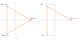
first two polygonal chains we use for testing: the vertices are those of an equilateral triangle, first one of them being on the x axis
The other two polygonal chains use a completely random list of coordinates for their points attributes. This is to give us a sense of how things work outside the particular case because certain things may be valid for the particular case, but not for the general case and we shouldn't lose sight of that either.
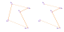
the other two polygonal chains we use for testing are completely random; the dashed lines denote the possibility of more vertices being in between those they connect
For all of these four test elements, we've also set an r attribute - this is the rounding radius. It doesn't do anything at this point, but we'll soon start writing the JavaScript code which fixes that.
The value of this rounding radius is completely arbitrary, we took it to be 10 here because it's a nice round number (it's easier to multiply or divide by 10 than it is by, let's say, 7.8) and it's also big enough relative to their sizes for the rounding it produces to be noticeable.
vertex, edge and corner (angle) numbering
Before we sink our teeth into code, let's make sure a few basic concepts are clear.
If we have a points attribute with n pairs of coordinates, then our polygonal chain, whether it's closed (<polygon>) or open (<polyline>) has n vertices: 0, 1, ... n-1.
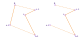
if the points attribute has n pairs of coordinates, then our polygonal chain (closed or open, doesn't matter) also has n vertices
In the <polygon> case, we also have n edges. However, in the <polyline> case, we don't connect the last vertex (n-1) to the first one (0) anymore, so we have one edge less (compared to a <polygon>, a <polyline> with the same points attribute is missing the polygon's last edge). That's n-1 edges for the open polygonal chain with n vertices.
In both cases, we take edge 0 to be the one between vertex 0 and vertex 1, edge 1 between vertices 1 and 2 and so on. In general, edge i is between vertices i and i+1, where i can be any natural number smaller than the number of edges.
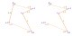
if the points attribute has n pairs of coordinates, then our polygonal chain has n edges if it's closed and n-1 edges if it's open; in general, edge i is between vertices i and i+1 in both cases
In the <polygon> case, vertex i+1 is actually vertex (i+1)%n - that's what's we're going to use in the JavaScript code, but, for now, we're lazy and we just want to write less.
Now let's move on to corners (angles). These are formed by two consecutive edges meeting at a vertex. In the <polygon> case, we have one at each vertex - that's n corners (angles).
In the <polyline> case however, we don't have two edges meeting at the first (0) and last (n-1) vertices - those are endpoints, we have no corners (angles) there. This makes the number of corners (angles) equal to n-2 in this situation.
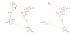
if the points attribute has n pairs of coordinates, then our polygonal chain has n corners (angles) if it's closed and n-2 corners (angles) if it's open; in general, corner (angle) i is between edges i-1 and i in the <polygon> case and between edges i and i+1 in the <polyline> case
In the <polygon> case, the first corner (0) is formed where edges n-1 and 0 meet at vertex 0, second corner (1) is formed where edges 0 and 1 meet at vertex 1 and, in general, corner i is formed where edges i-1 and i meet at vertex i, where i can be any natural number smaller than the number of corners (n).
In the <polyline> case, the first corner (0) is formed where edges 0 and 1 meet at vertex 1 and, in general, corner i is formed where edges i and i+1 meet at vertex i+1, where i can be any natural number smaller than the number of corners (n-2).
Again, by i-1, we actually mean (i+n-1)%n and by i+1 we actually mean (i+1)%n (though it's something we only care about if the polygonal chain is closed).
Let's see what this means in the case of our first two polygonal chains. For the closed chain, we have 3 vertices, 3 edges and 3 corners (angles). For the open chain, we have 3 vertices, 2 (=3-1) edges and 1 (=3-2) corner (angle).
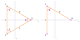
numbering vertices (purple), edges (orange) and angles (pink) for a polygonal chain (closed on the left and open on the right) whose vertex coordinates describe an equilateral triangle
This is important to understand because some of the variables we have to deal with in the JavaScript code are vertex-related (for example, an array of vertex coordinates), which means they're arrays of length n in both cases.
Others are edge-related (for example, an array of edge lengths or an array of edge slopes), which means they're arrays of length n in the <polygon> case and of length n-1 in the <polyline> case.
Other variables are corner-related (for example, an array of polygonal chain angles or an array of start or end points of each rounding arc), which means they're arrays of length n in the <polygon> case and of length n-2 in the <polyline> case.
the start code
Now let's go to the JavaScript part. We begin by creating a fillet(_poly) function, which we call for every element that has both a points attribute (because the only two SVG elements that need it are <polygon> and <polyline>) and an r attribute (because we only trigger corner rounding if we have a rounding radius specified):
function fillet(_poly) {};
const _P = document.querySelectorAll('[points][r]'),
NP = _P.length;
for(let i = 0; i < NP; i++)
fillet(_P[i]);
Our function doesn't yet do anything, so let's start working on that.
checking rounding radius validity
We read the value of the r attribute, convert it to a number, then we check that the value we got is a finite, positive number. Otherwise, we exit the function.
const R = +_poly.getAttribute('r');
if(!isFinite(R) || R <= 0) return;
In order to test this code, we also try giving the r attribute invalid values.
extracting vertex coordinates and checking their validity
Next, we extract the vertex coordinates from the points attribute, checking that they're at least 3 sets of coordinates, the minimum number needed to create a polygon (because a polygon has at least 3 vertices, in which case it's a triangle). Now we've written nice and clean points attributes for our test polygons and polylines, which makes them easy to split into sets of coordinates. However, differently formatted and messier versions display the exact same result, SVG is pretty forgiving here.
All of the following also result in the exact same <polygon> or <polyline> - note the different comma and space placement, that we may not have any kind of separator before a negative value, that scientific notation is allowed and that we may even have an extra unpaired coordinate at the end:
So, after reading the value of the points attribute, we need to make sure we catch all these possibilities with the regular expression we use to split() the string we get (though first we must insert a separator before negative values if we don't have one) and then, since all the coordinate values are still strings at this point, we convert them to numbers (note that we'll be using arrow functions and other ES6 features for our polyfill):
let v = _poly.getAttribute('points')
.replace(/(\d)\-/g, `$1 -`)
.split(/\s*,\s*|\s+/g)
.map(c => +c);
This makes sure we get the same array if we have the same coordinates, no matter how the points attribute may have been formatted, as it can be seen in this Pen (we get something like [x0, y0, x1, y1, ...]).
While our code catches all of these situations, you should always put separators even in front of negative-valued coordinates as polygonal chains won't show up in Firefox otherwise, even though Blink browsers and Edge seem to have no issue with this and Firefox does accept path data attributes where the separators in front of negative values are missing.
Now we check if we have the minimum number of coordinates needed to form a polygon. If not, we exit the function.
let n = v.length;
if(.5*n < 3) return;
/* remove the extra unpaired coordinate value
* at the end if we have one */
n -= n%2;
After that, we check that all useful coordinates are finite numbers. If not, we exit the function, otherwise we compact the linear array of coordinates into a two-dimensional array of x,y pairs of coordinates (so basically, we go from something like [x0, y0, x1, y1, ...] to something like [[x0, y0], [x1, y1], ...]) using reduce().
for(let i = 0; i < n; i++)
if(!isFinite(v[i])) return;
// a, c, i = accumulator, current item, current index
v = v.reduce((a, c, i) => i%2 ? a.concat([[v[i - 1], c]]) : a, []);
n = v.length;
This Pen tests that the above code works as intended.
getting the type of shape
So far, it didn't matter whether our shape is a <polygon> or a <polyline> because we've only dealt with invariant things (the polygonal chain itself _poly, its rounding radius R) or with vertex-related ones (the array of vertex coordinates v).
But things are about to change, so we need to get the type of polygonal shape we're dealing with:
let τ = +(_poly.localName !== 'polygon');
τ is 0 for a <polygon> element and 1 for a <polyline>, as it can be tested here.
checking for collinearity and eliminating unneeded vertices
We're doing one more check here before we start working on the rounding and that's to see that no three consecutive points are collinear. If that happens to be the case, we remove the one in the middle (the second of the three) because we don't really need it - with or without it, our shape is the same. The illustration below shows this:
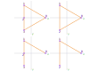
1, 2 and 3 (first column) are collinear; 2 (first column) isn't a real vertex, so we can safely remove it and then shift indices (second column)
Points 1, 2 and 3 (first column) are collinear. Point 2 (first column) isn't a real vertex, just a point on the segment between the previous (1) and the next (3) points. Removing it and shifting the indices of the points that come after it doesn't alter our shape, but reduces our code and makes our life easier.
If removing a vertex happens to leave us with less than 3 vertices, then we exit the function.
Whether we have a closed or an open polygonal chain, we need to perform this check for every possible group of three consecutive points.
In the <polyline> case, these groups are:
0, 1, 2
1, 2, 3
...
i-1, i, i+1
...
n-3, n-2, n-1
The general form of these groups is i-1, i, i+1, where 1 ≤ i < n-1.
In the <polygon> case however, the list of points is cyclic. This means that the first point (0) has a previous one (which is the last point, n-1) and the last point (n-1) has a next one (which is the first point, 0). So in this case, our groups are:
The general form of these groups is pretty much the same as before, (i-1+n)%n, i, (i+1)%n, it's just that this time 0 ≤ i < n.
The geometric interpretation of this is that, in the <polyline> case, adding a point that's collinear with the first and the last at the beginning (or at the end) of the list of points gives us a different shape from the initial one. In the <polygon> case, this doesn't happen, we still have the same shape. This is why such a point is safe to remove in the <polygon> case, but not in the <polyline> one (we'd lose an edge in this situation).
The following image illustrates this. The first row presents the <polygon> case, while the second one presents the <polyline> case. The first colums shows the initial shapes. The second one shows the result of adding a point collinear with the first and last at the beginning of the list of points. The third one shows the result of adding a point collinear with the first and last at the end of the list of points.
adding a point that's collinear to the first and the last at the beginning or at the end in the <polygon> case (top row, same shape in all cases) vs. in the <polyline> case (bottom row, different shapes); first colum shows the initial polygonal chains, while others show the results of adding a point that's collinear to the first and the last at the beginning (column two) or at the end (column three)
In the <polygon> case, adding this extra point doesn't modify the shape. The newly added point isn't a new vertex, just a point on an already existing edge and the segments that start from it aren't two distinct edges, just two parts of the same edge.
In the <polyline> case however, the newly added point is a new vertex, even if it's on the same line with the initial endpoints. This is because the initial endpoints aren't connected and, due to the nature of the polyline, this point doesn't get connected to both, only to one of them.
Alright, let's see how we can determine whether three points are collinear. Or almost collinear because sometimes rounding errors come into play. Consider the situation of our test triangle. Its last edge is between points -25,43.3 and 50,0. If we take the point where this edge intersects the y axis, this point is 0,28.9.
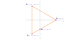
the last edge of our test triangle intersects the y axis at 0,28.9
Now the 43.3 and 28.9 values are actually rounded values so that we don't have write a truckload of decimals - you have to admit, values like 43.301270189221932338186158537647 look ugly and nobody wants to write them by hand or even copy-paste them around, especially since dropping all decimals after the first doesn't visibly affect our shape. Not to mention that putting that long sausage of characters into the SVG figures showing the test triangle would have completely ruined them.
However, this rounding also means that these three points will fail a strict collinearity check, which is why we need to leave a bit of room for error.
But what exactly does the collinearity check involve? It involves checking whether the angle between the two edges formed by our three consecutive points is either really close to 0° or really close to 180°, where "really close" means within error limits. If our cutoff angle is, let's say 1°, then we get a positive for our collinearity check when the the angle between the two edges formed by the three consecutive points is either smaller than 1° or larger than 180° - 1° = 179°.
This means we need to compute the angles of our polygonal chain. We do this using the law of cosines. This gives us the cosine of an angle of a triangle as a function of the edge lengths of that triangle. Given the shape of the cosine graph on the [0°, 180°] interval, our almost collinearity check reduces to checking that the absolute value of the cosine we get is smaller than the cosine of a cutoff angle, as illustrated by the following interactive demo (drag the slider thumb):
The vertical lines represent the angular boundaries beyond which the angle formed by the three points we consider is either almost 0° or almost 180°. The horizontal lines represent the boundaries beyond which the cosine of our angle in absolute value is greater than the threshold error, where the threshold error is the cosine of our cutoff angle.
What we end up doing is discard the values in the hashed area since those angles are really close to either 0° or 180°. This means discarding the vertices where we have angles that are less than a cutoff angle away from 0° or 180° and the way we check that is by comparing the value of their cosine in absolute value to the value of the cosine of the cutoff angle (the threshold error).
Note that, even though the cosine function decreases slowly at the ends of the [0°, 180°] interval, we don't really need a large cutoff value to catch rounding errors - a .1° would suffice so that we don't have issues in the case of rounded coordinates for our test triangle.
Alright, but getting the cosine requires that we know the edge lengths, so we need to compute these first, before we get to the angles. Let's see how!
Consider the generic edge i. This is between vertices Ai and Ai+1. We first draw a horizontal line through Ai, then we project Ai+1 onto the horizontal line we've drawn previously.
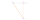
we draw a horizontal line through Ai, then we project Ai+1 onto it
Ai+1Ti+1 is perpendicular onto the horizontal, which means that it's a vertical line. This also means that the AiAi+1Ti+1 triangle we've just created is a right triangle where we know the coordinates of all three vertices.
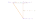
AiTi+1Ai+1 is a right triangle where we know the coordinates of all three vertices
In the right triangle AiTi+1Ai+1, the Ti+1 vertex is on the same horizontal line as Ai, so it has the same y coordinate (yi). It's also on the same vertical line as Ai+1, so it has the same x coordinate (xi+1). Since the AiTi+1 segment is a horizontal one, its length is the difference between the x coordinates of the two points:
dxi = xi+1 - xi
Similarly, since the Ti+1Ai+1 segment is a vertical one, its length is the difference between the y coordinates of the two points:
dyi = yi+1 - yi
Since we compute these coordinate differences between the ends of each edge, that makes them edge-related - we have as many such coordinate differences as edges - that is n in the <polygon> case and n-1 in the <polyline> case. We'll be needing these coordinate differences for more than one thing, so we compute them and store them in an array d. Every item in this array is a pair of differences along the two axes.
Whether we have a closed or an open polygonal chain, the value of pair i depends on the coordinates of vertex i and on those of vertex i+1.
di = fn(vi, vi+1)
diagram showing how getting coordinate differences between edge endpoints from vertex coordinates works in the two cases: <polygon> (top) vs. <polyline> (bottom)
Putting all this into code, we start from the 2D array of vertex coordinates v, which we map() to another 2D array of differences d:
let ne = n - τ; /* number of edges */
let d = v.slice(0, ne).map((c, i) => {
let nxτ = v[(i + 1)%n]; /* next vertex coords */
return [
nxt[0] - c[0] /* x difference dx */,
nxt[1] - c[1] /* y difference dy */
];
});
This Pen checks that the above code works as expected - if we have three vertices, then we should have 3 sets of coordinate differences if the polygonal chain is closed and 2 sets of coordinate differences if the polygonal chain is open.
Next, we need to compute the edge lengths. In order to see how we do that for the generic edge i (AiAi+1), let's go back to our right triangle:
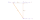
in the right triangle AiAi+1Ti+1, AiAi+1 is the hypotenuse
In this triangle, AiAi+1 (li) is the hypotenuse, so we can compute it using the Pythagorean theorem:
li = √(dxi2 + dyi2)
In our JS code, this would be:
let l = d.map(c => Math.hypot(...c));
This Pen checks that we get equal edge lengths for our test cases where the vertices are those of an equilateral triangle.
The law of cosines states that the cosine of the angle α of a triangle equals the sum of the squares of the two edges that form it (b and c) minus the square of the opposing edge (a), all divided by twice the product between the two adjacent edges (b and c):
cos(α) = (b2 + c2 - a2)/(2·b·c)
We already know b and c - they're the two polygonal edges that form the angle we want to get. In the <polygon> case, the two edges forming angle i are Ai-1Ai (i-1) and AiAi+1 (i). In the <polyline> case, the two edges forming angle i are AiAi+1 (i) and Ai+1Ai+2 (i+1).
the edges that form angle i are i-1 and i in the <polygon> case (left), but i and i+1 in the <polyline> case (right)
In general, given that τ is 0 for a <polygon> and 1 for a <polyline>, the two edges we want (the b and c in the law of cosines) are Ai-1+τAi+τ (i-1+τ) and Ai+τAi+1+τ (i+τ).
But what about the edge opposing our angle α - edge a? Well, we don't know it yet, but we can compute it in the same manner as the other two - from the coordinates of its endpoints. These are the start point of the first edge forming our angle (Ai-1 in the <polygon> case and Ai in the <polyline> case) and the end point of the second edge forming our angle (Ai in the <polygon> case and Ai+1 in the <polyline> case). This means that, in the general case, our a is the Ai-1+τAi+1+τ segment.
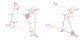 case (left) and in the case (right)'/>
the third edge we need to compute angle i using the law of cosines in the <polygon> case (left) and in the <polyline> case (right)
So if the polygonal chain is closed, the angle αi depends on the lengths of edges i-1 and i and on the coordinates of vertices i-1 and i+1:
αi = fn(li-1, li, vi-1, vi+1)
If the polygonal chain is open, the angle αi depends on the lengths of edges i and i+1 and on the coordinates of vertices i and i+2:
αi = fn(li, li+1, vi, vi+2)
The following diagram illustrates the above:
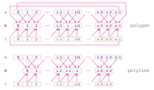 (top) vs. (bottom)'/>
diagram showing how computing angles using the law of cosines from edge lengths and vertex coordinates works in the two cases: <polygon> (top) vs. <polyline> (bottom)
Unifying the two cases, we have:
αi = fn(li-1+τ, li+τ, vi-1+τ, vi+1+τ)
Putting all of this into JS code, we have:
const CA = .25; /* cutoff angle in degrees */
function fillet(_poly) {
/* threshold error = cosine of cutoff angle */
const TE = Math.cos((_poly.hasAttribute('data-ca') ?
_poly.getAttribute('data-ca') : CA)*Math.PI/180)
/* same code a before */
let α = [];
for(let i = τ; i < ne; i++) {
let j = (i - 1 + n)%n /* first edge index */,
k = (i + 1)%n /* second edge index */,
/* third edge endpoint coord differences */
dx = v[j][0] - v[k][0],
dy = v[j][1] - v[k][1],
c = Math.hypot(dx, dy) /* third edge */,
/* cosine of current angle from law of cosines */
h = (l[i]*l[i] + l[j]*l[j] - c*c)/(2*l[i]*l[j]);
/* if current cosine greater than threshold error */
if(Math.abs(h) > TE) {
/* remove middle vertex */
v.splice(i, 1);
/* update number of vertices
* and exit if we're left with less than 3*/
if(--n < 3) return;
/* remove coord diffs related to removed vertex,
* introduce those between adjacent vertices */
d.splice(j, 2, [dx, dy]);
/* remove edges connected to removed vertex
* introduce shortcircuiting segment */
l.splice(j, 2, c);
ne--; /* update number of edges */
/* decrement index */
i = Math.max(i - 2, τ - 1);
/* to fix previous angle */
if(α.length) α.pop();
}
else α.push(Math.acos(h));
}
}
Since we don't want the threshold error to be set in stone, we've left the option of easily overriding the cutoff angle for each polygonal chain via a data-ca attribute which takes degree values.
Also, every time we remove a vertex, we also discard the angle we've computed for the previous vertex if there is one (if(α.length) α.pop()) so that we recompute it and get a more accurate value. This is also why we're decrementing the index by 2 (i-2), not just by 1. However, we don't want to run the risk that during the next iteration, the current index is less than the start one (τ), which is why we set a lower limit of τ-1 on the decremented index.
To better understand why we recompute the previous angle if we've removed a vertex, consider the following part of a polygonal chain illustrated below:
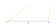
highlighting an almost collinearity situation in a polygonal chain
Our collinearity check reveals that vertices Ar-1, Ar and Ar+1 are almost collinear, so we can remove the one in the middle, shift vertex numbering, remove the two edges connected to the removed vertex and replace them with the segment connecting the vertices before and after.
after removing the vertex we don't need, our angles are slightly different
All good, but note how this slighly changes the angles at two vertices before and after the removed point (pale pink before, bright pink after). We haven't yet computed the angle for the vertex after and, when we do that, we'll take into account the new polygonal chain, but we've already computed the one before and we've already added it to the α array. We can recompute it, but we don't want to add it twice to the array of angles α, so we pop out the last item in this array and we make the current index of the loop go back one extra step.
However, there's one more case to consider. Let's say that the vertex we remove is the last one and that the polygonal chain is closed. Then, the "next" vertex is the first one and we've already computed the angle at that vertex. In fact, it was the first one we've computed - α[0]. So what we need to do in order to also cover this case is to recompute the first angle (α[0]) right before we make the loop index go back:
if(!τ && i === ne) {
dx = v[i - 1][0] - v[k][0];
dy = v[i - 1][1] - v[k][1];
c = Math.hypot(dx, dy);
h = (l[i-1]*l[i-1] + l[0]*l[0] - c*c)/(2*l[i-1]*l[0]);
α[0] = Math.acos(h);
}
This Pen checks that all angles are 60° ones if the vertices of our test polygonal chain are those of an equilateral triangle, maybe with some points on this triangle's edges in between.
Note that the angles in the illustrations above are exaggerated and would correspond to a way larger error margin than we really use. So we may well skip the recomputations altogether as they don't really make that big of a difference. For an almost collinearity situation like that given by rounding errors as in the example seen earlier, the increase in accuracy is of under .03° - in order to get an angle that small, we must divide the circle into 12000 equal parts.
recap of what we know so far
Now that we got edge cases out of the way, let's see what we have so far:
the rounding radius r, which we've extracted from the r attribute
the vertex coordinates (the v array) of the initial polygonal chain, which we've extracted from the points attribute
the number (n) of vertices
whether our polygonal chain is closed (τ=0) or open(τ=1)
the differences between all the pairs of consecutive vertex coordinates (the d array)
the edge lengths (the l array) of our polygonal chain
the number (ne) of edges
the angles (the α array) of our polygonal chain
how rounding corners works
A polygonal chain with rounded corners is equivalent to a path made up of straight line segments (one along each proper edge of the initial polygonal chain) and arcs (one replacing each corner of the initial polygonal chain).
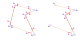
equivalent paths for polygonal chains with rounded corners where the start and end points for each arc are marked on the figure; note how in the <polygon> case, arc i is at vertex i (and we have n arcs in total), while in the <polyline> case, it's at vertex i+1 (and we only have n-2 arcs in total, as the first and last vertices are endpoints and we don't have arcs there)
This <path> element's data (d) attribute is made up of:
a "move to" (M) command followed by the coordinates of the point where our path starts;
in the <polygon> case, this is the start point of the first arc (S0), whose coordinates are xs0,ys0 (still unknown at this point);
in the <polyline> case, this is the first vertex of the initial <polyline> (A0), whose coordinates are x0,y0 (which we already have);
an "arc to" (A) command for every i-th arc (where 0 ≤ i < n in the <polygon> case and 0 ≤ i < n-2 in the <polyline> case); this draws the arc between its start point (Si) and its end point (Ei);
a "line to" (L) command for every i-th segment where 0 ≤ i < n-1, followed by the coordinates point where this line segment ends;
in the <polygon> case, this is the start point of the next arc (Si+1), whose coordinates are xsi+1,ysi+1; also, this line segment starts from the end point of the arc we've just drawn (Ei, of coordinates xei,yei);
in the <polyline> case, this is either the start point of the next arc (Si+1), whose coordinates are xsi+1,ysi+1 (still unknown at this point) or the last vertex of the initial <polyline> (An-1), whose coordinates are xn-1,yn-1 (which we already have); also, this line segment starts either from the first vertex of the initial <polyline> (A0), whose coordinates are x0,y0 (which we already have) or from the end point of the arc we've just drawn (Ei), of coordinates xei,yei (still unknown at this point);
only in the <polygon> case, a "close path" (z) command at the end which connects the end point of the last arc (En-1 of coordinates xen-1,yen-1) to the start point of our path (also the start point of the first arc S0);
the "arc to" (A) command
Let's take a closer look at the components of an "arc to" command. We have the following:
the radius of this arc along the x axis of its system of coordinates - this is equal to the rounding radius R
the radius of this arc along the y axis of its system of coordinates - this is also equal to the rounding radius R
the rotation of its system of coordinates - this doesn't matter in our case since the radii along the two 2D dimensions (x and y) are equal, so we take it to be 0 to keep things as simple as possible
the large arc flag - this is 0 in our case since we always take the small arc at a vertex (the one inside the small angle, the one under 180°
the sweep flag fi - this is 1 if the arc goes clockwise between its start and its end point and 0 otherwise; it's something we need to compute for each arc
the x coordinate of the arc's end point - this is xei for the generic i-th arc
the y coordinate of the arc's end point - this is yei for the generic i-th arc
path data structure
Knowing all this, our path data is going to look something like this for the <polygon> case:
M xs0, ys0
A R, R, , 0, 0, f0, xe0, ye0
L xs1, ys1
A R, R, , 0, 0, f1, xe1, ye1
...
L xsi, ysi
A R, R, , 0, 0, fi, xei, yei
...
L xsn-2, ysn-2
A R, R, , 0, 0, fn-2, xen-2, yen-2
L xsn-1, ysn-1
A R, R, , 0, 0, fn-1, xen-1, yen-1
z
In the <polyline> case, things look a bit different:
M x0, y0
L xs0, ys0
A R, R, , 0, 0, f0, xe0, ye0
L xs1, ys1
A R, R, , 0, 0, f1, xe1, ye1
...
L xsi, ysi
A R, R, , 0, 0, fi, xei, yei
...
L xsn-3, ysn-3
A R, R, , 0, 0, fn-3, xen-3, yen-3
L xn-1, yn-1
However, in the end, we still need to get the same three things for each arc i, whether the number of arcs is n (closed polygonal chain) or n-2 (open polygonal chain):
whether it goes clockwise or not, which determines the value (1 or 0) for its sweep flag fi
the coordinates xsi,ysi of its start point Si
the coordinates xei,yei of its end point Ei
sweep flags
For every arc, the value of its sweep flag f is determined by whether the arc goes clockwise (in which case it's 1) or not (in which case it's 0).
(xi - xi-1)·(yi+1 - yi ) -
(xi+1 - xi )·(yi - yi-1)
But these are the same coordinate differences we've already computed earlier, so our sum becomes:
dxi-1·dyi - dxi·dyi-1
If this sum is positive, then the arc goes in the clockwise direction and the sweep flag for the arc we replace vertex i with is 1. If it's negative, then the arc goes counterclockwise and the sweep flag is 0. But what if it's exactly 0? Well, that cannot happen. Half the absolute value of this sum happens to be exactly the area of the triangle formed by the i-1, i and i+1 points, which is zero only when these three points are collinear and we've already excluded that situation.
If the sum is positive, then the sign of the sum is + (the value of the sign function is 1) and the corresponding sweep flag is 1. If the sum is negative, then the sign of the sum is - (the value of the sign function is -1) and corresponding sweep flag is 0.
This helps us extract a formula for the sweep flag of the arc replacing the corner at vertex i:
.5·(sgn(dxi-1·dyi - dxi·dyi-1) + 1)
We can check that this works for both a positive sum (.5·(1 + 1) = .5·2 = 1) as well as for a negative one (.5·(-1 + 1) = .5·0 = 0).
A very important thing to keep in mind is that that arc i replaces vertex i only for a closed polygonal chain. For an open one, it replaces vertex i+1. This is because the array of sweep flags (like all other variables that define an arc, such as the coordinates of its endpoints) is corner-related - we have a sweep flag for each arc, but we have no arcs at the vertices where we don't have corners (the endpoints of a <polyline>).
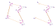
the rounding arcs highlighted for the two random polygonal chains: closed (left) vs. open (right)
This means that, in the <polygon> case, the value of the sweep flag fi depends on the coordinate differences di (between vertex i+1 and vertex i) and di-1 (between vertex i and vertex i-1):
fi = fn(di, di-1)
However, in the <polyline> case, the value of the sweep flag fi depends on the coordinate differences di+1 (between vertex i+2 and vertex i+1) and di (between vertex i+1 and vertex i):
fi = fn(di+1, di)
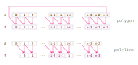
diagram showing how getting sweep flags from vertex coordinates works in the two cases: <polygon> (top) vs. <polyline> (bottom)
If τ is the type of polygonal chain (0 when closed vs. 1 when open), then the two can be unified:
fi = fn(di+τ, di-1+τ)
In the <polygon> case, both the index of the current arc and of the coordinate differences corresponding to the edge after the vertex the arc replaces (edge i) go from 0 all the way through n-1 (0 ≤ i < n). But in the <polyline> case, the index of the current arc goes from 0 through n-3 (0 ≤ i < n-2), while that of the coordinate differences corresponding to the edge after the vertex the arc replaces (edge i+1) goes from 1 through n-2 (1 ≤ i < n-1).
In the unified case, the index of the current arc goes from 0 through n-1-2·τ (0 ≤ i < n-2·τ), while that of the edge after the vertex the current arc replaces goes from τ through n-1-τ (τ ≤ i < n-τ).
Now let's code this! What we do here is map() the 2D array of coordinate differences to a 1D array of flags:
let f = d.slice(τ).map((c, i) => {
/* coord diffs corresp to previous edge */
let prv = d[(i + ne - 1 + τ)%ne];
return .5*(Math.sign(prv[0]*c[1] - c[0]*prv[1]) + 1);
});
This Pen checks that the above bit of JavaScript works as it should.
start and end points of arcs
coordinates for random point in 2D
Let's take a random point P, whose coordinates xp,yp we need to compute. We can consider this point to be on a circle of radius r. Its xp,yp coordinates depend on the radius of the circle and on where it is on the circle. The measure of where it is on the circle is the angle between the radial line OP and the horizontal (the x axis). The following interactive demo illustrates this (drag point P to see how its coordinates change as the circle radius and the angle of the radial line change):
The Q and R points are the projections of our point P onto the axes of our system of coordinates. This means that PQ and PR are perpendicular onto the axes (the ∠PQO and ∠PRO angles are 90° angles). It also means that the OQ and PR segments are equal to xp (which is the value of P's x coordinate) and that the OR and PQ segments are equal to yp (which is the value of P's y coordinate).
PQO is a right triangle (since the ∠PQO angle is a 90° angle) where we know the hypotenuse OP (it's r, the radius of the circle our point P is on) and the ∠QOP angle (it's θ).
The cosine of the ∠QOP angle (θ) is the ratio between the adjacent cathetusOQ (xp) and the hypotenuse OP (r). This means we have cos(θ) = xp/r and, from here, we get that xp = r·cos(θ).
Similarly, the sine of the same ∠QOP angle (θ) is the ratio between the opposing cathetus PQ (yp) and the hypotenuse OP (r). This means we have sin(θ) = yp/r and, from here, we get that yp = r·sin(θ).
So the xp,yp coordinates of any point P on a circle around the origin are:
xp = r·cos(θ)
yp = r·sin(θ)
Here, r is the radius of the circle and α is the angle of the radial line connecting the origin to our point P with respect to the horizontal (both are known).
But what about the case when this circle's central point doesn't coincide with the 0,0 point of the coordinate system? Well, in this case, we need to add up the coordinates of the circle's central point:
xp = xo + r·cos(θ)
yp = yo + r·sin(θ)
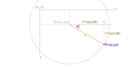
particular case of a point in a plane when the central point of the circle it's on is not at the 0,0 point of the coordinate system
This is the situation we're actually interested in because what we do here is take the start and end points of our arcs as being on circles whose central points are the corner points of our initial polygonal chain.
Let's consider first the start points:
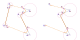
start points of arcs relative to vertices of initial polygonal chain
So for arc i, the coordinates of its start point can be computed from the xi+τ,yi+τ coordinates of the the polygonal chain vertex that's being replaced by this arc Ai+τ (Ai in the <polygon> case when τ = 0 and Ai+1 in the <polyline> case when τ = 1), the radius Ai+τSi (AiSi in the <polygon> case when τ = 0 and Ai+1Si in the <polyline> case when τ = 1) of this circle and the angle of the radial segment Ai+τSi with respect to the horizontal.
We already know all vertex coordinates, so what we still need to get are the Ai+τSi radii and the angles between the horizontal and these radial lines.
Now let's see the end points:
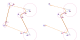
end points of arcs relative to vertices of initial polygonal chain
For arc i, the coordinates of its end point can be computed from the xi+τ,yi+τ coordinates of the the polygonal chain vertex that's being replaced by this arc Ai+τ (Ai in the <polygon> case when τ = 0 and Ai+1 in the <polyline> case when τ = 1), the radius Ai+τEi (AiEi in the <polygon> case when τ = 0 and Ai+1Ei in the <polyline> case when τ = 1) of this circle and the angle of the radial segment Ai+τEi with respect to the horizontal.
Just like in the start point case, what we still need to compute are the Ai+τEi radii and the angles between the horizontal and these radial lines.
segments connecting replaced vertices to start and end points of corresponding arcs
Every one of our rounding arcs is a part (less than half) of a circle of radius R. This is the rounding radius, which is known, we've read it from the r attribute on our <polygon> or <polyline> element.
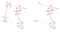
each rounding arc is a part of a circle of radius R
The start and end points of an arc are the points where the two consecutive edges of our initial polygon that form the angle we want to replace with this arc touch the circle of radius R (placed inside the angle) that the rounding arc belongs to. This means that these edges are tangent to this circle at the start and end point of the arc. A radial segment to the point where a tangent line touches the circle is perpendicular onto that tangent line.
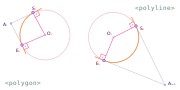
the edges meeting at the vertex replaced by arc i (which is vertex i if the polygonal chain is closed and vertex i+1 if the polygonal chain is open) are tangent to the circle this arc is a part of
This means that the Ai+τOiSi (AiOiSi in the <polygon> case and Ai+1OiSi in the <polyline> case) and Ai+τOiEi (AiOiEi in the <polygon> case and Ai+1OiEi in the <polyline> case) triangles are right triangles.
Furthermore, they have the same hypotenuse Ai+τOi and their OiSi and OiEi catheti are equal (as they're both radial segments - R). This makes our two right triangles congruent, meaning that their Ai+τSi and Ai+τEi edges are also equal and that the acute angles ∠OiAi+τSi and ∠OiAi+τEi are equal.
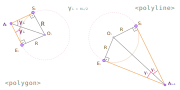
the vertex replaced by arc i: the Ai+τOiSi and Ai+τOiEi triangles are congruent right triangles with a common hypotenuse
This is really useful.
First of all, it means that the Ai+τOi line (AiOi if the polygonal chain is closed and Ai+1Oi if the polygonal chain is open) is the angle bisector of the ∠Ai-1+τAi+τAi+1+τ angle, which we have already computed, it's αi. Consequently, we can easily get the ∠OiAi+τSi and ∠OiAi+τEi angles - they're half of the already computed ∠Ai-1+τAi+τAi+1+τ, which makes each one of them αi/2.
It also means that we need to compute Ai+τSi. Ai+τEi has the exact same length, which we denote by ρi. We can compute this from the right triangle Ai+τOiSi. The tangent of the ∠OiAi+τSi angle (αi/2) is the opposing cathetus OiSi (R) over the adjacent one Ai+τSi (ρi):
angles between horizontal and segments connecting replaced vertices to arc start/ end points
Let's see the angles of the segments connecting the replaced vertices (τ, .... i-1, i, i+1, ... n-1-τ, where τ is 0 if the polygonal chain is closed and 1 otherwise) to the start points:
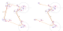
angles of radial segments Ai+τSi with respect to the horizontal
Since the Si points are on the Ai+τAi-1+τ segments (AiAi-1 in the <polygon> case when τ = 0 and Ai+1Ai in the <polyline> case when τ = 1), the angles of the Ai+τSi radii with respect to the horizontal are the angles between the horizontal and these Ai+τAi-1+τ segments (which are edges of our initial polygonal chain).
So the angles we want are the angles formed at every vertex between the horizontal and the edge before that vertex. That's if there is an edge before that vertex because, in the case when the polygonal chain is open, we don't have an edge before the first vertex A0.
The array of δ angles we need to get is an edge-related variable - we compute one angle for each edge of the polygonal chain, so we have one less angle computation to do in the <polyline> case (because we have one less edge in this situation).
Also, in the <polyline> case, we only use the first n-2 of these angles. We don't need δn-2 in this situation since this is the angle of the An-1An-2 edge and we don't have a start point of an arc on that edge, only the end point of the last arc (arc n-3, replacing vertex n-2) and this arc end point is then connected to the end point of the polyline, last vertex An-1.
Moving on to the endpoints, we can see the angles marked on the following figure:
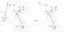
angles of radial segments Ai+τEi with respect to the horizontal
Since the Ei points are on the Ai+τAi+1+τ segments (AiAi+1 in the <polygon> case when τ = 0 and Ai+1Ai+2 in the <polyline> case when τ = 1), the angles of the Ai+τEi radii with respect to the horizontal are the angles between the horizontal and the Ai+τAi+1+τ edges of our initial polygonal chain.
In this case, the angles we want are the angles formed at every vertex between the horizontal and the edge after that vertex. Again, that's only if there is an edge after that vertex because, in the case when the polygonal chain is open, we don't have an edge after the last vertex An-1.
The array of γ angles we need to get here is also an edge-related variable - we compute one angle for each edge of the polygonal chain, so we have one less angle computation to do in the <polyline> case since we don't connect the last vertex to the first one in this situation.
Since the array of edge angles γ is edge-related, but the array where we store the coordinates of the arcs' endpoints is corner-related, this means that, in the <polyline> case, we only use the last n-2 of the edge angles. We don't need γ0 in this situation since this is the angle of the A0A1 edge and we don't have an end point of an arc on that edge, only the start point of the first arc (arc 0, replacing vertex 1), which is connected to the start point of the polyline, first vertex A0.
A very important thing to notice from the previous two illustrations is that γi (the angle between the horizontal and the AiAi+1 segment) and δi (the angle between the horizontal and the Ai+1Ai segment, which is basically the same segment as AiAi+1, only going in the other direction) are consecutive interior angles (because all horizontal lines are parallel with one another) and therefore, their absolute values add up to 180° (which makes them supplementary).
angles γi and δi
If we also take into account their signs (one goes clockwise, so its sign is +, the other one goes in the opposite direction, so its sign is -), we see that they are 180° apart. Subtracting 180° from the positive one gives us the negative one, while adding 180° to the negative one gives us the positive one.
The interactive demo below illustrates this. Drag the AiAi+1 segment to see how its angle with respect the horizontal (γi, marked with pink) changes and how that influences the angle of Ai+1Ai with respect to the horizontal (δi, marked with green).
Knowing that we have this relation between the two means that, if we get γi, then we can easily get δi as well.
In order to compute γi, let's get back to our right triangle AiTi+1Ai+1:
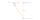
γi in the right triangle AiTi+1Ai+1
In this right triangle, the tangent of the ∠Ti+1AiAi+1 angle (γi) is the ratio between the opposing cathetus Ti+1Ai+1 (dyi) and the adjacent cathetus AiTi+1 (dxi).
tan(γi) = dyi/dxi
This means that we can get this angle γi (which is also the angle of the AiAi+1 edge) from the values of the dxi and dyi differences that we now know (the d array) using Math.atan2():
let γ = d.map(c => Math.atan2(...c.reverse()));
This pen checks that we got the correct values this way.
The reverse() function mutates the array, but that's exactly what we want here since we won't need the pairs of coordinates in the dx,dy order again anyway (only in the dy,dx order we have them now after reversing them, but we'll get to that soon).
In general, the tangent of an angle between the horizontal and a segment (doesn't matter whether this angle is acute, obtuse, positive, negative) is the ratio between the oriented projections of this segment onto the vertical and horizontal lines passing through the start point of this segment. The figure below illustrates this for the γi angle of the AiAi+1 segment with respect to the horizontal.
the oriented projections of the AiAi+1 segment
Now let's see how things look in the case of the δi angle of the Ai+1Ai segment with respect to the horizontal.
the oriented projections of Ai+1Ai compared to AiAi+1
In this case, the projections are oriented in the opposite direction, which gives us that the tangent of the angle δi between the horizontal and the Ai+1Ai segment is the ratio between -dyi and -dxi:
tan(δi) = -dyi/-dxi
Wait a second, that's the same ratio as before because the minus signs cancel each other! Does that mean we get the same angle as before and wouldn't that be wrong since γi and δi must have opposite signs? Well, while the ratio is the same, the oriented projections have different signs, so we don't get the same angle if we compute it with the Math.atan2() function, which takes these projections as separate arguments (and not just the ratio as one argument the way Math.atan() does):
let δ = d.map(c => Math.atan2(...c.map(c => -c)));
Note that now we didn't need to reverse the pairs of coordinate differences because we've already done that when we computed the γ array.
This Pen checks that the angles we got look right.
coordinates for start and end points of arcs
And we're finally here! The following figure illustrates how we compute the coordinates of the start point of our arcs:
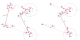
how to get the coordinates of the start points of our arcs
There's a lot going on in the above illustration, but the main idea is that we get the coordinates of start point Si from those of the original vertex that the arc it starts (arc i) replaces, which is vertex Ai+τ (Ai in the <polygon> case and Ai+1 in the <polyline> case), from the length of the Ai+τSi segment (ρi) and from the angle of this segment with respect to the horizontal (δi-1+τ):
let s = ρ.map((c, i) => {
let x = v[i + τ][0] + c*Math.cos(δ[(i - 1 + τ + ne)%ne]),
y = v[i + τ][1] + c*Math.sin(δ[(i - 1 + τ + ne)%ne]);
return [x, y];
});
The above code works, but it's a bit repetitive, so let's iron that out:
const HF = ['cos', 'sin'];
let s = ρ.map((c, i) =>
v[i + τ].map((k, j) =>
k + c*Math[HF[j]](δ[(i - 1 + τ + ne)%ne)));
Now let's move on to the end points. The following illustration shows how their coordinates can be computed:
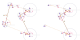
how to get the coordinates of the end points of our arcs
For arc i, we get the coordinates of end point Ei from those of the original vertex that the arc it ends replaces, which is vertex Ai+τ (Ai in the <polygon> case and Ai+1 in the <polyline> case), from the length of the Ai+τEi segment (ρi) and from the angle of this segment with respect to the horizontal (γi+τ):
let e = ρ.map((c, i) =>
v[i + τ].map((k, j) =>
k + c*Math[HF[j]](γ[(i + τ + ne)%ne)));
creating the path data
Now that we have all we need in order to generate our path data, let's see how we do that.
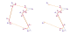
equivalent paths vs. original polygonal chains
If our polygonal chain is closed, then our path data looks something like this:
Mxs0, ys0
A R, R, , 0, 0, f0, xe0, ye0
...
L xsi, ysi
A R, R, , 0, 0, fi, xei, yei
...
L xsn-1, ysn-1
A R, R, , 0, 0, fn-1, xen-1, yen-1
z
However, if our polygonal chain is open, things change a bit:
M x0, y0
L xs0, ys0
A R, R, , 0, 0, f0, xe0, ye0
...
L xsi, ysi
A R, R, , 0, 0, fi, xei, yei
...
L xsn-3, ysn-3
A R, R, , 0, 0, fn-3, xen-3, yen-3
L xn-1, yn-1
In both cases, we start with a "move to" (M) command.
In the <polygon> case, we go straight to the start point of the first arc (xs0,ys0). In the <polyline> case, we go to the first vertex of our original polygon (x0,y0) and from there, using the "line to" (L) command, we draw a line to the start point of the first arc (xs0,ys0).
From this point on, we have a big chunk that's a gain common drawing all the arcs of our equivalent path (n of them in the <polygon> case and n-2 in the <polyline> case) and connecting these arcs with straight lines (from the end point of one to the start point of the next).
From the end point of the last arc of our equivalent path (xen-1,yen-1 if the polygonal chain is closed and xen-3,yen-3 if it's open) things are again a bit different. In the <polygon> case, we just close the path (the z command). In the <polyline> case, we go to the last vertex of our original polygon (xn-1,yn-1) and we don't close the path.
So the JavaScript code that generates our path data is:
/* number of angles of original polygonal chain */
let na = n - 2*τ;
/* the path data */
let pd = `M${τ ? v[0] + 'L' : ''}`;
for(let i = 0; i < na; i++) {
pd += `${i ? 'L' : ''}${s[i]}A${[R, R, 0, 0, f[i], e[i]]}`;
}
pd += τ ? `L${v[n - 1]}` : 'z';
However, just generating this path data doesn't do anything. We need to create a <path> element, append it right next to our initial polygonal chain and set this path data to its d attribute.
const NS_URI = 'http://www.w3.org/2000/svg';
let _path = document.createElementNS(NS_URI, 'path');
_path.setAttribute('d', pd);
let _up = _poly.parentNode;
_up.insertBefore(_path, _poly);
The initial polygonal chain element and this <path> element are one on top of each other, so we tweak the opacity of the polygonal chain in the CSS and set a few very obvious styles for the <path> to check that everything looks right:
It looks like it works for a lot of types of random polygonal chains, so can there still be a situation when it fails?
Sadly, yes, so we're not done yet!
the big radius problem
Let's consider the original SVG code we had for our first test polygon (the equilateral triangle) and let's increase the rounding radius (r attribute) to something like 35 or 59 or anything a lot larger than our initial value of 10. Now the result doesn't look right anymore and the same happens for other polygonal chains when we increase their rounding radii beyond a certain value.
The problem here is the rounding radius being too big for at least one edge (or that edge being too short for the rounding radius, same thing).
Consider edge i being too short. This makes the end point (Ei-τ) of the arc replacing the vertex our too short edge starts from (Ai) end up after the start point (Si-τ+1) of the arc replacing the vertex the same edge ends at (Ai+1).
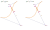
edge i is too short for the rounding radius given by the r attribute, which puts Si-τ+1 behind Ei-τ in going from Ai to Ai+1
So if edge i (AiAi+1) is too short, then in going from the end point of arc i-τ (Ei-τ) to the start point of arc i-τ+1 (Si-τ+1), we actually go backwards on this edge, towards its start point (Ai), not towards its end point (Ai+1) as we should.
The fix is to decrease the radii of the arcs replacing the vertices this edge i connects until Si-τ+1 isn't behind Ei-τ anymore. This happens when Si-τ+1 and Ei-τ overlap, which means stopping when the sum of the AiEi-τ and Si-τ+1Ai+1 segments equals AiAi+1.
DEMO
An important thing to notice is that, in doing this, no angles change. The only things changing are the dimensions of the triangles formed between the initial polygon edges, the arc radii that are perpendicular onto these edges and the segments connecting the original vertices to the central points of the arcs - it's like these triangles get scaled down with respect to the Ai points.
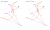
limit radius situation (solid) vs. initial one (dashed and faded) for edge i
In order to keep things simple, we scale everything by the same factor, which means that the radii of both arc i-τ and i-τ+1 remain equal to each other throughout the scaling process. We call the radius value for which the end point of arc i-τ (Ei-τ) coincides with the start point of arc i-τ+1 (Si-τ+1) the limit radius we can have for the arcs connected to edge i (AiAi+1). This limit radius is edge-related because we compute one for each edge.
Now let's consider just the right triangles AiOi-τEi-τ and Ai+1Oi-τ+1Si-τ+1 after they've been scaled down.
right triangles AiOi-τEi-τ and Ai+1Oi-τ+1Si-τ+1 after they've been scaled down
In the right triangle AiOi-τEi-τ, the tangent of the ∠Oi-τAiEi-τ angle (αi-τ/2) is the opposing cathetus Oi-τEi-τ (which goes from the initial value of the rounding radius R to the limit value of the rounding radius mi after scaling down) over the adjacent cathetus AiEi-τ. This means that AiEi-τ is mi/tan(αi-τ/2).
And in the right triangle Ai+1Oi-τ+1Si-τ+1, the tangent of the ∠Ai+1Oi-τ+1Si-τ+1 angle (αi-τ+1/2) is the opposing cathetus Oi-τ+1Si-τ+1 (which goes from the initial value of the rounding radius R to the limit value of the rounding radius mi after scaling down) over the adjacent cathetus Ai+1Si-τ+1. This means that Ai+1Ei-τ+1 is mi/tan(αi-τ+1/2).
This gives us that the sum of the AiEi-τ and Ai+1Si-τ+1 (or Si-τ+1Ai+1, orientation doesn't matter in this case) segments is:
mi·(1/tan(αi-τ/2) + 1/tan(αi-τ+1/2))
To make things easier for ourselves, let's denote by k the inverses of the tangents of the half vertex angles. This makes the above become:
mi·(ki-τ + ki-τ+1)
But the sum of the AiEi-τ and Ai+1Si-τ+1 segments is also the full edge AiAi+1.
So this all means that, at the point when we stop scaling down the radius, the AiAi+1 segment (li) is:
li = mi·(ki-τ + ki-τ+1)
This way, we can extract the limit radius mi:
mi = li/(ki-τ + ki-τ+1)
Note that, while k is corner-related (as the k values get computed directly from those of the angles at each corner), rl is edge-related - we have one limit radius per edge.
The first thing we need to do here is compute the k values. This is a corner-related array whose values get computed directly from those of the angles at each corner:
let k = α.map(c => 1/Math.tan(.5*c))
Before we compute the limit radius for each edge, there's one more thing to keep in mind: the first edge and the last edge in the <polyline> case only get connected to one arc, not two. The start point of the first edge A0 doesn't get replaced by an arc when the polygonal chain is open and neither does the end point of the last edge An-1.
In the <polygon> case, we have that mi depends on the length of the edge it corresponds to (li) and on the angles at the start (i) and end (i+1) vertices of this edge, more precisely on the k values computed as the inverses of the tangents of half these angles:
mi = f(li, ki, ki+1)
In the <polyline> case, we have two particular cases for the first and last edge and a general case:
i = 0: m0 = f(l0, k0)
i = n-2: mn-2 = f(ln-2, ki-3)
0 < i < n-2: mi = f(li, ki-1, ki)
This is illustrated by the following diagram:
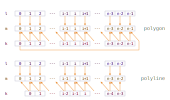
diagram showing how getting limit radii m from edge lengths l and vertex angle constants k works in the two cases: <polygon> (top) vs. <polyline> (bottom)
Let's now take a closer look at how we get the limit radius for the first edge when the polygonal chain is open.
the right triangle A1S0O0 in the initial case (left, using the radius R set via the r attribute) vs. the limit case (right, after scaling it down with respect to A1 such that S0 coincides with A0, which means it's not beyond the A0 limit of the A0A1 segment anymore)
When we're in the <polyline> case (τ = 1) and we're at the first edge (i = 0), the limit case is when the start point of the first arc S0 coincides with the first vertex of the polygonal chain A0 or, in other words, when the A0A1 segment equals the A1S0 segment. Since the length of the A0A1 segment is l0 and we can compute that of the A1S0 segment as m0/tan(α0/2) or m0·k0, we get that the limit radius in this case is:
m0 = l0/k0
Compared to the general formula li/(ki-τ + ki-τ+1), the first term at the denominator (ki-τ) is missing in this situation where τ = 1 and i = 0. This means we can consider we have a p multiplier in front of this term and this multiplier is 0 if τ = 1 and i = 0, but 1 in every other situation. Given that τ can be either 0 (for <polygon> elements) or 1 (for <polyline>) and that i can be any natural number smaller than the number of edges, we can come up with the following formula for p:
p = i >= τ
This means we now have:
mi = li/(p·ki-τ + ki-τ+1)
p = i >= τ
Now let's see the limit radius for the last edge when the polygonal chain is open.
the right triangle An-2Sn-3On-3 in the initial case (left, using the radius R set via the r attribute) vs. the limit case (right, after scaling it down with respect to An-2 such that Sn-3 coincides with An-1, which means it's not beyond the An-1 limit of the An-2An-1 segment anymore)
When we're in the <polyline> case (τ = 1) and we're at the last edge (i = n-2), the limit case is when the end point of the last arc En-3 coincides with the last vertex of the polygonal chain An-1 or, in other words, when the An-2An-1 segment equals the An-2En-3 segment. Since the length of the An-2An-1 segment is ln-2 and we can compute that of the An-2En-3 segment as mn-2/tan(αn-3/2) or mn-2·kn-3, we get that the limit radius in this case is:
mn-2 = ln-2/kn-3
Compared to the general formula li/(ki-τ + ki-τ+1), the last term at the denominator (ki-τ+2) is missing in this situation where τ = 1 and i = n-2. This means we can consider we have a q multiplier in front of this term and this multiplier is 0 if τ = 1 and i = n-2, but 1 in every other situation. Given that τ can be either 0 (for <polygon> elements) or 1 (for <polyline>) and that i can be any natural number smaller than the number of edges (ne = n-τ), we can come up with the following formula for q:
q = ne - 1 - i >= τ
This means we now have:
mi = li/(p·ki-τ + q·ki-τ+1)
p = i >= τ
q = ne - 1 - i >= τ
This way, the JavaScript code for computing the array of limit radii is:
let m = l.map((c, i) =>
c/((i >= τ)*k[(i - τ + na)%na] + (ne - 1 - i >= τ)*k[(i - τ + 1)%na]));
Now we need to compute one more thing and that's the actual radius we use for every arc. This is the minimum value between the intial rounding radius set via the r attribute and the two limit radii corresponding to the two edges this arc connects.
in both the <polygon> case (left) and the <polyline> case (right), the actual rounding radius we use for corner i is the minimum between the initial radius R set via the r attribute and the limit radii we've computed for the edges that meet at this corner: limit radius mi+τ-1 corresponding to edge i+τ-1 (Ai+τ-1Ai+τ) and limit radius mi+τ corresponding to edge i+τ (Ai+τAi+τ+1)
If the polygonal chain is closed, then the edges arc i connects are edges i-1 and i, so the actual radius rai depends on the limit radii mi-1 and mi:
rai = f(R, mi-1, mi)
If the polygonal chain is open, then the edges arc i connects are edges i and i+1, so the actual radius rai depends on the limit radii mi and mi+1:
rai = f(R, mi, mi+1)
This is illustrated by the following diagram:
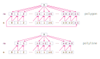
diagram showing how getting the actual radii ra from the initial rounding radius set via the r attribute and from the limit radii m works in the two cases: <polygon> (top) vs. <polyline> (bottom)
In the unified case, we have that:
rai = f(R, mi+τ-1, mi+τ)
So the JavaScript code that computes the actual radius we need to use for every arc is:
let ra = m.slice(0, na).map((c, i) =>
Math.min(R, m[(i + τ - 1 + ne)%ne], m[i + τ]));
Alright, but just computing the actual radii doesn't really do anything, we need to update the ρ segments and the path data to use these newly computed radii instead of the initial radius R set via the r attribute:
There's something very interesting that can be seen in the above demo - while the rounded shapes for the random polygon look different for different starting radii, in the case of the equilateral triangle, they're both circles. This is because, in the case of regular shapes, all edges and angles are equal. This means that all values in the l array (storing the edge lengths) are equal and all the values in the α (storing the angles of our polygonal chain) array are equal. Consequently, all values in the m array (the array of limit radii depending solely on these two sets of factors - edges and angles) are equal, so the shape we get for any given rounding radius greater than this common limit radius is always the same.
At the limit, the end point of an arc coincides with the start point of the next arc and, since the actual radii are also equal and the central points of the circles are always inside the initial polygon shape in the case of a regular polygon, be it a convex regular one or a self-intersecting star one, then all these circles are all the same (as they have the same central point and the same radius). So we get to the conclusion that, in the case of any regular polygon, its rounding shape beyond the limit radius (that its edges and angles allow) is always the same circle that's tangent to all of its edges.
So for any regular polygon, any rounding radius R (set via the r attribute) greater than the limit radius m always gives us a rounding shape that's identical to the inradius of the initial regular polygon. This is illustrated by the following demo:
Similarly, we always get the same shape for a rounding radius R greater than the limit radius m in the case of equilateral polygons where the sum of any two consecutive angles is always the same, which basically means equilateral polygons with an even number of vertices, all the even-numbered ones equal between them and all the odd-numbered ones equal between them (though the odd and the even not equal between them, as that would give us the particular case covered previously, that of a regular polygon). An simple example of this would be any rhombus.
Now let's see how things look for random, pretty irregular polygonal chains:
Now everything looks nicely rounded even when the rounding radius set via the r attribute is too large!
copying the look of initial polygonal chains
Before we hide the original polygonal chains and leave just the path equivalents with rounded corners, we need to make sure they look the same way.
The first thing that comes to mind here is to copy the attributes of the initial polygonal chain to the equivalent path. This takes care of everything that's been set via presentation attributes, via id, class, attribute selectors or via inline styles.
I've been in doubt whether to do this for all attributes or exclude the points and r ones. I eventually decided not to exclude them because I didn't want to break styles in case there might be rule sets that use these attributes for the selectors - for example, something like this:
[points][r] { /* styles */ }
Also, while they have the downside of adding to the markup, their presence doesn't really do any harm.
The code for copying the attributes looks as follows:
for(let i = 0; i < _poly.attributes.length; i++) {
let attr = _poly.attributes[i];
_path.setAttribute(attr.name, attr.value);
}
The following pen shows the result of adding the above code:
For the most part, things are fine. However, what copying all attributes doesn't cover is styles set using the polygon or polyline selectors. In the CSS of the above pen, we have as follows:
These styles don't get applied to the equivalent paths, as it is highlighted in the following illustration (the areas inside the equivalent path, but outside the initial polygonal line don't have a fill):
ILLUSTRATIONNNNNNNNNNNNN
What we can do here is add some appropriate classes on the equivalent paths (let's say fillet--c for the equivalents of closed polygonal chains and fillet--o for the equivalents of open ones) and also add these classes to the above selector lists.
Adding these classes to the equivalent paths is something we do for each such path after copying the attributes from the original polygonal chains:
_path.classList.add(`fillet--${τ ? 'o' : 'c'}`)
However, adding them wherever we have element selectors is something we do only do once, right at the beginning, before rounding any polygonal chain.